품질경영기사 (2013-06-02 기출문제)
1과목: 실험계획법
1. 반복이 없는 2원 배치법에 대한 설명 중 틀린 것은? (A의 수준수는 ℓ , B의 수준수는 m이다.)
- 특별히 한 인자는 모수이고, 나머지 인자는 변량인 경우를 난괴법이라 한다.
- 분리해 낼 수 있는 변동의 종류는 SA, SB, SA×B, Se가 있다.
- 오차항의 자유도는 (ℓ-1)(m-1)이다.
- 모수모형의 경우 결측치가 발생하면 Yates가 제안한 방법으로 결측치를 추정하여 분석할 수 있다.
(정답률: 83%)

2. 동일한 제품을 생산하는 3대의 기계가 있다. 이들 간에 부적합품률에 차이가 있는가를 조사하기 위하여 적합품을 0, 부적합품을 1로 하는 계수치 데이터의 분산분석을 실시한 결과 아래와 같은 표를 얻었다. 오차항의 자유도 ?e를 구하면?
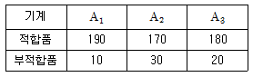
- ?e＝599
- ?e＝3
- ?e＝597
- ?e＝2
(정답률: 79%)
3. 아래와 같은 L8(27)형의 선점도의 1, 2, 4, 7열에 각각 4개의 인자 A, B, C, D를 배치하여 실험하였다. 설명이 틀린 것은?
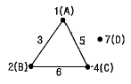
- 제4열－C인자의 자유도는 1이다.
- 제5열－인자 A와 인자 C의 교호작용이 나타난다.
- 제6열－B×C의 교호작용이 나타나며 자유도는 1이다.
- 제7열－D인자는 외딴섬으로 오차항으로 활용해야 한다.
(정답률: 70%)
4. 실험의 정도를 올릴 목적으로 실험의 장을 층별하기 위해서 채택한 인자로 수준의 재현성도 없고, 제어인자와의 교호작용도 의미가 없지만 실험값에는 영향을 주는 인자는?
- 표시인자
- 보조인자
- 오차인자
- 블럭인자
(정답률: 45%)
5. 모수모형에서 완전 랜덤 실험계획(completely randomized design)을 이용하여 정해진 4개의 실험조건에서 각각 5회씩 반복 실험했다. 이 측정치를 분석하기 위한 다음 내용을 읽고 가장 올바른 것을 고르면?
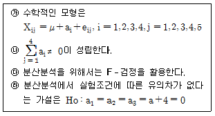
- ㉮, ㉯, ㉰만 옳다.
- ㉮, ㉰, ㉱만 옳다.
- ㉰, ㉱만 옳다.
- ㉮, ㉯, ㉰, ㉱가 옳다.
(정답률: 77%)
6. 반 투명경의 투과율을 측정하기 위하여 측정광원의 파장(A)을 4수준 지정하고 다수의 측정자로부터 랜덤으로 4명(B)을 뽑아 반복이 없는 이원배치실험을 행하고 그 결과를 분산분석 한 결과 다음 표를 얻었다. 측정자에 의한 분산성분의 추정치
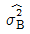
의 값은 약 얼마인가?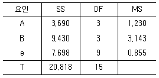
- 0.763
- 0.572
- 0.507
- 0.322
(정답률: 68%)
7. 반복수가 n으로 동일하고 a개의 수준을 갖는 일원배치법에서 처리제곱합(sum of square treatment)은 몇 개의 직교대비로 분해 가능한가?
- a개
- n개
- a－1개
- n-1개
(정답률: 74%)
8. 일차단위가 1원 배치인 단일분할법에서 A,B는 모수인자. 반복 R은 변량인자인 경우, 추정치 및 통계량을 구하는 공식이 옳지 않은 것은? (단, A, B의 수준수는 ℓ, m이다.)
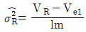
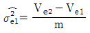
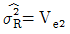
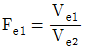
(정답률: 60%)
9. 다음은 인자 A 4수준, 인자 B 2수준, 인자 C 2수준, 반복 2회의 지분실험법을 실시한 결과를 분산분석표로 나타낸 것이다. 설명이 옳지 않은 것은?
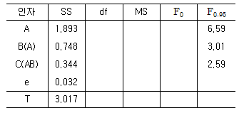
- 인자 A의 자유도는 3이다.
- 오차항 e의 자유도는 (N-1)-ℓmn(r-1)=15
- 인자 B(A)의 자유도는 ?A×B+?B=3×1+1=4이다.
- 인자 B(A)의 분산비 검정은 인자 C(AB)의 분산으로 검정한다.
(정답률: 64%)
10. 다음 표는 32 요인실험의 결과표이다. 인자 B의 변동 SB를 구하면 약 얼마인가?
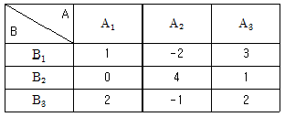
- 1.56
- 4.22
- 23.11
- 28.89
(정답률: 72%)
11. 실험계획법에 관련된 설명 중 가장 올바른 것은?
- 자유도는 제곱을 한 편차의 개수에서 편차들의 선형제약조건의 개수를 뺀 것과 같다.
- 자유도는 수준 i 에서의 모평균 μi가 전체의 모평균 μ로부터 어느 정도의 치우침을 가지는가를 나타내는 변수이다.
- 오차항에서 가정되는 4가지 특성은 정규성, 독립성, 불편성, 랜덤성이 있다.
- 1원 배치법의 ANOVA에 대한 가설검정의 귀무가설은 σ2A＞0이다.
(정답률: 32%)
12. 교락법에서 블럭반복을 행하는 경우에 각 반복마다 블럭효과와 교락시키는 요인이 다른 경우를 무엇이라 하는가?
- 완전교락
- 단독교락
- 이중교락
- 부분교락
(정답률: 76%)
13. 교락법에서 블록과 교락시키는 것은?
- 주효과
- 불필요한 고차의 교호작용
- 오차
- 특성치
(정답률: 72%)
14. 반복이 있는 2원 배치법의 실험에서 다음의 분산분석표가를 얻었다. 이 실험의 반복수 r은 얼마인가?
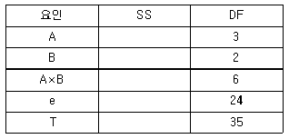
- 2
- 3
- 4
- 5
(정답률: 75%)
15. 라틴방격법의 설명 중 틀린 것은?
- 서로 직교하는 라틴방격 두 개를 조합한 것을 초그레코라틴방격이라 한다.
- 라틴방격법은 3인자의 실험에 쓰여지며 각 인자의 수준수가 반드시 동일해야 한다.
- 라틴방격법에서는 일반적으로 인자 간의 교호작용을 검출할 수 없다.
- 라틴방격법의 수준수를 k라 하면 총 실험회수는 k2이 된다.
(정답률: 66%)
16. 어떤 부품의 다수 로트에서 3로트(A1, A2, A3)를 골라 각 로트에서 랜덤하게 8개씩 샘플링하여 그 치수를 측정한 후 분산분석표를 작성하였다.
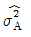
을 추정하면 약 얼마인가?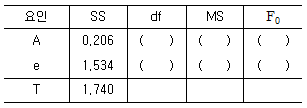
- 0.00374
- 0.0220
- 0.⑤15
- 0.073
(정답률: 74%)
17. 모수모형 반복 없는 3원 배치 실험을 실시하였더니 유의수준 5%로 유의한 인자는 와 A×C로 나타났다. 인자 A의 수준수 ℓ, B의 수준수 m, C의 수준수 n일 때 다음 중 설명이 옳지 않은 것은?
- 최적해의 점추정치는
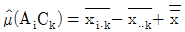
이다. - 유효반복수
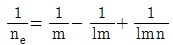
이다. 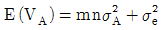
이다.- A 인자에 대한 분산비의 계산은
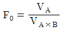
이다.
(정답률: 59%)
18. 독립변수가 1개인 직선회귀의 분산분석표가 아래와 같을 때 F0의 검정 결과는? (단, F0.99(ν1, ν2=11.1, F0.95(ν1, ν2=4.60)
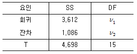
- 회귀관계가 깊다고 판단된다.
- 회귀관계가 거의 없다고 판단된다.
- 회귀관계가 전혀 없다고 할 수 있다.
- 위 자료로서는 판단할 수 없다.
(정답률: 67%)
19. 파라미터의 설계에 의하여 최적조건을 구하였으나 품질특성치의 산포가 만족할 만한 상태가 아닌 경우에 수행되는 설계는?
- 시스템설계
- 제품설계
- 허용차설계
- 공정설계
(정답률: 66%)
20. 모수인자에 대한 설명으로 가장 올바른 것은?
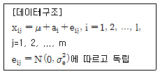
- 수준이 기술적인 의미를 갖지 못하며 수준의 선택이 랜덤으로 이루어진다.
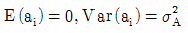
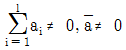
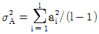
(정답률: 66%)
2과목: 통계적품질관리
21. 계수치 샘플링검사 절차(KS Q ISO 2859－1：2010)에서 검사수준을 결정하고자 할 때 큰 판별력을 필요로 하므로 시료의 크기를 크게 하려 할 때 가장 적합한 수준은?
- Ⅰ
- Ⅱ
- Ⅲ
- S－1
(정답률: 72%)
22. 관리도에 대한 설명으로 옳은 것은?
- 관리도는 작업표준을 작성할 때까지의 수단이며, 작업표준이 완성되면 관리도를 그릴 필요가 없다.
- 관리도는 공정능력지수가 1보다 크면 사용하지 않는다.
- 작업표준을 만들어 두면 관리도는 그릴 필요가 없다.
- 관리도는 과거의 데이터 해석에도 사용된다.
(정답률: 94%)
23. X 및 Y를 각각 정규분포 N(2, 3) 및 N(4, 6)을 따르는 독립 확률변수라 할 때 Z＝2＋3X＋Y의 분산은?
- 9
- 15
- 33
- 35
(정답률: 84%)
24. 제조공정의 관리, 공정검사의 조정 및 체크를 목적으로 행하여지는 검사방법은 무엇인가?
- 순회검사
- 비파괴검사
- 관리샘플링검사
- 로트별 샘플링검사
(정답률: 77%)
25. A 약품 순도의 모표준편차 σ＝0.3%인 공정으로부터 n＝4의 샘플링을 하여 측정한 결과 다음의 [데이터]가 나왔다. 이 공정의 순도(%)의 모평균에 대한 신뢰구간은 약 얼마인가? (단, 신뢰율은 95%이다.)
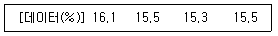
- 15.01∼15.19%
- 15.31∼15.89%
- 15.35∼15.92%
- 15.25∼15.65%
(정답률: 79%)
26. x와 y의 시료상관계수 r을 구하기 위하여 X＝(x-5)×100, Y＝(y-2)×10으로 데이터 변환을 하여, 변환된 X, Y로 상관계수 r을 구했더니 r＝0.37이었다. x와 y의 시료상관계수는 얼마인가?
- 3.7
- 0.37
- 0.037
- 0.0037
(정답률: 81%)
27. 원료 A와 원료 B에서 만들어지는 제품의 순도를 측정한 결과 다음과 같다. 원료 A로부터 만들어지는 제품의 분산을  이라 하고, 원료 B로부터 만들어지는 제품의 분산을
이라 하고, 원료 B로부터 만들어지는 제품의 분산을  이라 할 때 유의수준 0.⑤로
이라 할 때 유의수준 0.⑤로
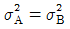
인가를 검정하는 데 필요한 F0의 값은 얼마인가?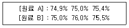
- 0.280
- 1.003
- 1.889
- 2.571
(정답률: 64%)
28. LCL＝73, UCL＝77, n＝4인  관리도에서 N(75, 22)를 따르는 로트의 경우 타점 통계량
관리도에서 N(75, 22)를 따르는 로트의 경우 타점 통계량
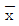
가 관리한계선 밖으로 나타날 확률은? (단, Z가 표준정규변수일 때, P(Z≤1)=0.8413, P(Z≤2)=0.9772, P(Z≤3)=0.9987이다.)- 0.0013
- 0.0027
- 0.0228
- 0.0456
(정답률: 54%)
29. 계수치 샘플링검사 절차(KS Q ISO 2859－1：2010)에서 보통검사에서 까다로운 검사의 전환 규칙으로 옳은 것은?
- 생산이 불규칙할 때
- 불합격 로트의 누계가 5개가 되도록 보통검사를 진행하고 있을 때
- 연속 5로트가 합격될 때
- 연속 5로트 이내의 초기검사에서 2로트가 불합격이 될 때
(정답률: 86%)
30. 다음 중 전수검사가 필요한 경우로 가장 옳은 것은?
- 파괴검사의 경우
- 검사항목이 많은 경우
- 안전에 중요한 영향을 미치는 경우
- 대량품인 경우
(정답률: 88%)
31. 계수치 축차 샘플링 검사방식(KS Q ISO 8422： 2009)에서 100 항목당 부적합수 검사를 하는 경우, 1회 샘플링 검사의 샘플 사이즈를 11개로 이미 알고 있다. 이때 누계 샘플 사이즈의 중지값은 얼마인가?
- 16개
- 17개
- 19개
- 21개
(정답률: 71%)
32. 오차에 대한 검토 시 측정치의 분포에 주목하여 통계적으로 생각해서 어떠한 조치를 취하여 야 되겠는가를 모색해야 한다. 이때 오차의 검토순서로 가장 옳은 것은?
- 정밀도 － 치우침 － 신뢰성
- 신뢰성 － 정밀도 － 치우침
- 치우침 － 신뢰성 － 정밀도
- 치우침 － 정밀도 － 신뢰성
(정답률: 62%)
33. x에 대한 y의 회귀관계를 검정하기 위하여 x에 대한 y의 값을 20회 측정하여 다음의 [데이터] 를 구했다. 이때 회귀에 의한 변동의 값은 얼마인가?
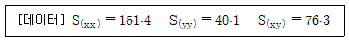
- 0.498
- 1.65
- 10.25
- 38.45
(정답률: 77%)
34. 검사특성곡선(Operating Characteristic Curve)에 관한 설명으로 옳은 것은?
- 1회 샘플링검사 방식에만 적용할 수 있다.
- 계량형 샘플링검사에는 적용할 수 없다.
- 부적합품률이 커짐에 따라 로트의 합격확률은 높아진다.
- 샘플링 검사방식이 부적합품률에 해당될 경우 로트의 부적합품률과 로트의 합격확률의 관계를 나타낸 그래프이다.
(정답률: 78%)
35. 다음의 데이터로 np 관리도를 작성할 경우 관리한계선은 약 얼마인가?
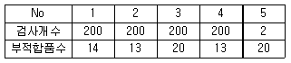
- 16±8.51
- 16±11.51
- 15±1.51
- 15±11.51
(정답률: 75%)
36. 모평균에 대한 추정의 95% 오차한계를 5 이하로 하기를 원할 때, 필요한 최소한 표본의 크기는? (단, 모표준편차는 30이다.)
- 11
- 36
- 60
- 139
(정답률: 60%)
37. 확률변수 x, y 사이의 공분산(共分散) Cov(x, y)특성으로 옳지 않은 것은?
- －∞ ＜ Cov(x, y) ＜ ∞
- x, y의 측정단위에 따라 Cov(x, y)의 값이 변한다.
- 공분산의 단위는 없다.
- Cov(x, y)＝0이란 상관관계가 없음을 뜻한다.
(정답률: 69%)
38. 현 시점에서 거슬러 올라간 개개의 관측치 또는 군의 평균치에 대하여 과거로 거슬러 올라간 것만큼 작은 비중을 부여하여 가중평균을 계산한 관리도를 무엇이라 하는가?
- EWMA 관리도
- Cusum 관리도
- C 관리도
- σ 관리도
(정답률: 66%)
39. KS A ISO 8258：2008 슈하트 관리도의 이상원인에 대한 판정기준으로 옳지 않은 것은?
- 14점이 교대로 증감하는 현상이 나타날 때
- 중심선의 한쪽에 연속해서 5점이 나타날 때
- 연속 6점이 점점 올라가는 현상이 나타날 때
- 점이 관리한계선에 접근하여 연속 3점 중 2점이 나타날 때
(정답률: 59%)
40. 평균치의 산포는 원래의 산포와 비교하여 어떠한가?
- n 만큼 크다.
- √n 만큼 크다.
- 1/√n 만큼 작다.
- n만큼 작다.
(정답률: 71%)
3과목: 생산시스템
41. 필요한 물품을 주문하여 이것이 입수될 때 구매 및 조달에 수반되어 발생하는 비용을 무엇이라 하는가?
- 재고부족비
- 발주비용
- 생산준비비
- 재고유지비
(정답률: 71%)
42. 운전요원이 수시로 근무 중 짧은 시간에 간단히 청소, 급유, 점검 등의 활동을 행하는 것을 무엇이라 하는가?
- 보전예방
- 자주보전
- 정기보전
- 전문보전
(정답률: 78%)
43. 포드시스템과 가장 관계가 깊은 것은?
- 이동조립법
- 시간연구
- 최적과업설정
- 고임금 저노무비
(정답률: 81%)
44. 프로젝트 K와 관련된 정보가 다음의 표와 같다. 모든 작업을 정상작업으로 수행할 경우의 주경로(Critical Path)는 유일하며 (A－B－E)라고 가정한다. 이 프로젝트의 전체 일정을 1일 단축시키기 위해서는 어떤 작업을 단축하는 것이 가장 경제적인가?
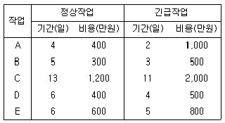
- A
- B
- C
- D
(정답률: 62%)
45. MRP에서 부품전개를 위해 사용되는 양식에 쓰이는 용어에 관한 설명으로 옳지 않은 것은?
- 계획수취량(planned Receipts)은 초기에 보충되어야 할 계획된 주문량을 말한다.
- 예정수취량(scheduled receipts)은 주문은 했으나 아직 도착하지 않은 주문량을 말한다.
- 순소요량(net requirements)은 총수요량에서 현재고량을 뺀 후 예정수취량을 더한 것이다.
- 발주계획량(planned order releases)은 필요시 수령이 가능하도록 구매주문이나 제조주문을 통해 발령하는 수량으로 계획수취량과 동일하다.
(정답률: 90%)
46. JIT 생산시스템의 특징으로 옳지 않은 것은?
- 간판시스템의 운영으로 재고수준을 감소시킨다.
- 작업의 표준화로 라인의 동기화(同期化)를 달성할 수 있다.
- 준비교체시간을 최소화시켜 유연성의 향상을 추구한다.
- 자재의 흐름은 푸시(push)방법이다.
(정답률: 89%)
47. 한국회사의 Y제품 가격이 1,500원, 한계이익률이 0.75일 때 생산량은 150개이다. 고정비는 얼마인가?
- 975원
- 1,388원
- 18,475원
- 168,750원
(정답률: 74%)
48. 예측오차가 평균이 0인 정규분포를 따를 때, 절대평균편차(MAD；Mean Absolute Deviation)와 오차제곱평균(MSE：Mean Squared Error)과의 관계로 가장 타당한 것은?
- MSE ≒ 1.25MAD
- √MSE ≒ 1.25MAD
- MAD ≒ 1.25MSE
- √MAD ≒ 1.25MSE
(정답률: 78%)
49. 재고와 관련된 비용으로 볼 수 없는 것은?
- 발주비용(Ordering cost)
- 재고유지비용(Holding or carrying cost)
- 품질실패비용(Failure cost)
- 생산준비비용(Set up cost)
(정답률: 86%)
50. MRP 시스템의 구조에서 반드시 필요한 입력요소에 포함되지 않는 것은?
- 주일정계획(MPS)이 정확하게 있어야 한다.
- 품목별 재고를 정확히 파악할 수 있는 체제를 갖추어야 한다.
- 자재명세서(BOM)가 있어야 한다.
- 공수계획이 수립되어야 한다.
(정답률: 82%)
51. 시계열분석에 의한 수요예측 모형에서 추세변동(T), 순환변동(C), 계절변동(S), 불규칙변동(I) 과 판매량(Y)의 관계식은?
- Y=T×C×S×I
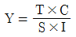
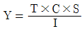
- Y=(T×C)-(S×I)
(정답률: 85%)
52. 비효율적인 동작으로서 작업을 중단시키는 요소는 어떤 서블릭(Therblig) 동작인가?
- 쥐기(Grasp)
- 잡고 있기(Hold)
- 내려놓기(Release Load)
- 빈손이동(Transport Empty)
(정답률: 62%)
53. 관측평균시간이 0.8분, 정상화 계수가 110%, 여유율이 5%일 때, 내경법에 의한 표준시간은 약 몇 분인가?
- 0.044
- 0.836
- 0.924
- 0.926
(정답률: 39%)
54. 제품공정분석 시 사용되는 공정도시기호에 대한 설명으로 옳지 않은 것은?
- ○：가공물을 작업함
- □：가공물을 검사함
- ⫐：가공물을 이동함
- ▽：가공물을 보관함
(정답률: 69%)
55. 다음 중 다품종 소량생산 형태에 가장 적합한 설비배치 유형은?
- 제품별 배치
- 라인별 배치
- 고정위치 배치
- 공정별 배치
(정답률: 79%)
56. 생산시스템의 투입(INPUT)단계에 대한 설명으로서 가장 적합한 것은?
- 기업의 부가가치창출 활동이 이루어지는 구조적 단계이다.
- 가치창출을 위하여 노동력, 관리, 설비, 원료, 에너지 등이 필요한 단계이다.
- 변환을 통하여 새로운 가치를 창출하는 단계이다.
- 필요로 하는 재화나 서비스를 산출하는 단계이다.
(정답률: 88%)
57. 추적지표(TS) 산정을 위한 표에서 빈칸에 해당하는 통계량은?
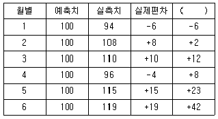
- 절대평균편차(MAD)
- 누적예측오차(CFE)
- 추적지표(TS)
- 평균제곱오차(MSE)
(정답률: 78%)
58. 스톱워치에 의한 시간연구에서 관측대상 작업을 여러 개의 요소작업으로 구분하여 시간을 측정하는 이유로서 옳지 않은 것은?
- 모든 요소작업의 여유율을 동일하게 부여하여 여유시간을 정확하게 구할 수 있다.
- 요소작업을 명확하게 기술함으로써 작업내용을 보다 정확하게 파악할 수 있다.
- 작업방법이 변경되면 해당되는 부분만 시간연구를 다시 하여 표준시간을 쉽게 조정할 수 있다.
- 같은 유형의 요소작업 시간자료로부터 표준자료를 개발할 수 있다.
(정답률: 54%)
59. 프로젝트 관리에 관한 설명으로 가장 적합한 것은?
- 프로젝트 일정관리에는 간트차트, PERT/CPM 기법 등을 주로 사용한다.
- PERT 기법에서 활동시간 추정에는 일반적으로 정규분포를 사용한다.
- PERT에서의 CP란 단위당 작업시간이 가장 짧은 최소시간을 연결한 것이다.
- 프로젝트를 수행하는 데 있어 비용을 투입할수록 작업시간은 증가하게 된다.
(정답률: 82%)
60. 일정계획(Scheduling)을 수립하는 데 고려하여야 할 사항과 가장 거리가 먼 것은?
- 생산기간
- 경기변동
- 작업능력 및 부하량
- 납기
(정답률: 77%)
4과목: 신뢰성관리
61. 시료 n개를 샘플링하여 미리 정해진 시험중단시간인 t0시간이 되면 시험을 중단하는 정시중단시험에서 평균수명의 측정값의 식은? (단, 고장이 발생하여도 교체하지 않는 경우이며, r은 고장개수이다.)
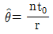
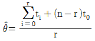
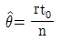
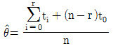
(정답률: 60%)
62. 고장시점에서부터 시간을 측정하여 t에서 수리가 완료될 확률밀도함수를 m(t)라 할 때, 보전도 M(t)를 정의하면?
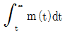
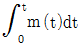
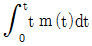
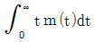
(정답률: 42%)
63. 어떤 시스템의 MTBF가 500시간, MTTR이 40시간이라고 할 때 이 시스템의 가용도(Availability)는 약 얼마인가?
- 91.4%
- 92.6%
- 97.2%
- 98.2%
(정답률: 80%)
64. 다음 중 설계단계에서 고유신뢰성을 향상시키는 방법으로 가장 거리가 먼 것은?
- 제품의 단순화
- 중복 설계 방법의 활용
- 고신뢰도 부품의 사용
- 부품과 제품의 번인(Burn－in) 시험
(정답률: 57%)
65. 평균고장률이 0.001/시간인 부품과 평균고장률이 0.004/시간인 부품이 병렬결합모형으로 만들어진 장치가 있다. 이 장치의 평균수명은 얼마인가?
- 950시간
- 1,⑤0시간
- 1,250시간
- 1,450시간
(정답률: 73%)
66. 어떤 재료에 가해지는 부하의 분포는 평균 1,500kg/mm2, 표준편차 30kg/mm2인 정규분포를 따르고, 사용재료의 강도의 분포는 평균 1,600kg/mm2, 표준편차 40kg/mm2인 정규분포를 따른다. 이 재료의 신뢰도는 약 얼마인가?
- 68.27%
- 95.46%
- 97.72%
- 99.73%
(정답률: 75%)
67. 갑자기 발생하여 사전에 또는 감시에 의해 예지할 수 없는 고장은?
- 마모고장
- 오용고장
- 열화고장
- 돌발고장
(정답률: 82%)
68. 기본설계 단계에서 FMEA를 실시한다면 큰 효과를 발휘할 수 있다. 다음 중 FMEA의 결과로 얻을 수 있는 항목으로 가장 거리가 먼 내용은?
- 임무달성에 큰 방해가 되는 고장모드 발견
- 인명손실, 건물파손 등 넓은 범위에 걸쳐 피해를 주는 고장모드 발견
- 컴포넌트 고장이 발생하는 확률의 발견
- 설계상 약점이 무엇인지 파악
(정답률: 73%)
69. M 제품의 평균수명이 450시간, 표준편차가 50시간인 정규분포를 따른다고 한다. 이 제품 100개를 새로 사용하기 시작했다면 지금부터 500∼600시간 사이에서는 평균 몇 개가 고장나겠는가? (단, u0.8413=1.0, u0.9987)
- 16
- 14
- 12
- 10
(정답률: 67%)
70. 다음과 같은 블럭도를 갖는 어떤 시스템의 FT도를 바르게 작성한 것은?
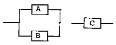
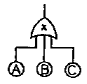
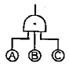
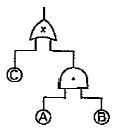
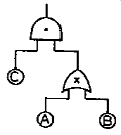
(정답률: 66%)
71. 컴퓨터 플로피 디스크 드라이브 10개의 샘플을 관측한 결과 500시간까지 고장이 한 개도 발생하지 않았다. 이 제품의 고장이 지수분포를 따를 때 신뢰수준 90%에서 MTBF를 추정한 값은 약 얼마인가?
- 3,887시간
- 2,799시간
- 2,174시간
- 1,875시간
(정답률: 52%)
72. 메디안 순위표에서 n＝8, 고장순위 i＝1일 때 R(t)값은 약 얼마인가?
- 0.872
- 0.917
- 0.945
- 0.95
(정답률: 70%)
73. 가속수명시험을 위한 아레니우스(Arrhenius) 모델에서 가장 중요한 영향을 미치는 가속인자로 사용하고 있는 것은?
- 전압
- 온도
- 습도
- 압력
(정답률: 68%)
74. 간섭이론의 부하강도 모델에서 부하가 평균 μX, 표준편차 σX인 정규분포에 따르고, 강도가 평균 μY, 표준편차 σY인 정규분포에 따르며, nY, nX는 μY와 μX로부터의 거리를 나타낼 때 안전계수 m을 구하는 식은?
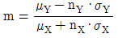
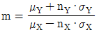
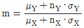
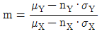
(정답률: 87%)
75. 어떤 부품의 수명시험 결과가 고장밀도함수 f(t)=μ·exp(-μt)의 식과 근사할 때, MTBF는?
- μ
- 1/μ
- 1/μ2
- μ2
(정답률: 80%)
76. 부품 1의 신뢰도는 0.9, 부품 2의 신뢰도는 0.9, 부품 3의 신뢰도는 0.8이다. 이 3개의 부품이 직렬결합으로 만들어지는 전기회로가 있다. 만일 이 전기회로의 신뢰도를 높이기 위해 부품 3에 대하여 병렬 리던던시 설계를 실시하였다면 전기회로 전체의 신뢰도는 약 얼마인가?
- 0.5184
- 0.6480
- 0.7128
- 0.7776
(정답률: 72%)
77. 전구 100개에 대한 수명시험을 한 결과 표와 같은 데이터를 얻었다. t＝120시간에서의 누적고장확률은 얼마인가?
- 0.85
- 0.65
- 0.35
- 0.15
(정답률: 56%)
78. 체계 전체의 설계목표치를 설정함과 동시에 하위 체계에 대하여 각각 신뢰성 목표치를 배분하는 신뢰성 배분의 일반적인 방침과 가장 거리가 먼 것은?
- 기술적으로 복잡한 구성품에 대해서는 낮은 목표치를 배분한다.
- 원리적으로 단순한 구성품에 대해서는 높은 목표치를 배분한다.
- 사용경험이 많은 구성품에 대해서는 높은 목표치를 배분한다.
- 고성능을 요구하는 구성품에 대해서는 높은 목표치를 배분한다.
(정답률: 65%)
79. 자동차가 안전하게 고속도로를 주행할 수 있는 조건을 차체 엔진부, 동력전달부, 브레이크 부, 운전기사 등의 하위 시스템으로 나눌 때 이것은 어느 모형에 적합한가?
- 병렬 모형
- 직렬 모형
- 브리지 모형
- 대기 중복
(정답률: 65%)
80. 신뢰성 샘플링 검사에서 지수분포를 가정한 신뢰성 샘플링 방식의 경우 λ0와 λ1을 고장률 척도로 하게 된다. 이때 λ1을 무엇이라고 하는가?
- ARL
- AFR
- AQL
- LTFR
(정답률: 75%)
5과목: 품질경영
81. 공정의 산포가 규격의 최대치와 최소치의 차보다 클 때, 조치사항으로 가장 관계가 먼 것은?
- 현실에 맞지 않게 너무 엄격하면, 제품을 받는 업체와 상의하여 규격의 범위를 넓히도록 한다.
- 공정의 산포를 줄이기 위하여 공정의 조건을 바꾼다.
- 새로운 기계의 구입, 공구설계, 가공방법 변경 등 기본적인 공정의 개선을 꾀한다.
- 문제가 해결될 때까지 납품되는 제품을 철저하게 샘플링 검사를 한다.
(정답률: 67%)
82. 한국산업규격의 부문 분류기호에서 B는?
- 금속
- 기본
- 기계
- 식료품
(정답률: 43%)
83. 치우침을 고려한 공정능력지수 (Cpk)에 대한 설명으로 가장 거리가 먼 것은?
- 일정기간 중의 실제공정능력을 추적할 수 있다.
- 공정이 규격중심에서 얼마나 치우쳤는지 확인할 수 있다.
- 공정개선을 위한 우선순위와 개선의 방향성을 결정할 수 있다.
- 자연공차와 같은 개념으로 공정의 잠재능력을 표현한 것이다.
(정답률: 38%)
84. 품질시스템이 잘 갖추어진 회사는 끊임없는 개선이 이루어지는 것이 보장된 것이다. 끊임없는 개선에 대한 설명 중 옳지 않은 것은?
- P－D－C－A의 개선과정을 feed－back시키는 것이다.
- 기업에서 개선할 점은 언제든지 있다.
- 품질개선은 종업원의 창의성을 필요로 한다.
- 품질개선은 반드시 표준화된 기법을 적용하여야 한다.
(정답률: 63%)
85. 표준화에 관한 용어의 설명으로 옳지 않은 것은?
- 시방은 재료, 제품 등의 특정한 형상, 구조, 성능, 시험방법 등에 관한 규정이다.
- 시험은 어떤 물체의 특성을 조사하여 데이터를 구하는 것이다.
- 공차는 부품의 어떤 부분에 대하여 실제로 측정한 치수이다.
- 검사란 시험결과를 정해진 기준과 비교하여 로트의 합ㆍ부를 판정하는 것이다.
(정답률: 88%)
86. 고객에 대한 설명 중 옳지 않은 것은?
- 고객은 내부고객과 외부고객이 있다. 흔히 내부고객은 회사 내 직원을 의미하고, 외부고객은 최종사용자를 의미한다.
- 새로운 건물을 짓는 건축회사는 자신의 고객으로 새로운 건물에 입주할 입주대상자와 자재를 공급하는 공급자들만 외부고객으로 정의하였다.
- 제품의 품질을 만드는 것은 내부고객이다. 내부고객을 정확히 알고 내부고객 요구를 만족시켜 주는 것이 좋은 품질을 만드는 지름길이다.
- 외부고객은 제품의 최종사용자이다. 기업에선 제품의 사용자를 정확하게 파악하여 이들의 의견을 정확하게 청취하여 대책을 세우는 것이 경쟁력을 갖추는 지름길이다.
(정답률: 72%)
87. 품질설계에 있어서 소비자 요구 만족도를 향상시키기 위한 2가지 제한조건으로 가장 올바른 것은?
- 품질보증과 코스트
- 품질보증과 품질조사
- 기술수준과 코스트
- 시장품질과 공정능력
(정답률: 58%)
88. Y품질 특성값의 규격은 50–60으로 규정되어 있다. 평균값이 55, 표준편차가 1인 공정의 시그마(σ) 수준은 어느 정도인가?
- 2시그마 수준
- 3시그마 수준
- 4시그마 수준
- 5시그마 수준
(정답률: 76%)
89. SI 기본단위가 옳게 짝지어진 것은?
- 광도–럭스(Lux)
- 시간–분(M)
- 열역학적 온도–켈빈(K)
- 질량–그램(g)
(정답률: 76%)
90. 다음 조건하에서 계측시스템의 산포(σm)는 약 얼마인가?
- 0.78
- 0.84
- 0.87
- 0.94
(정답률: 73%)
91. 공장조직의 기본형태의 공식조직에서 소규모 조직에 사용되는 원탁형 조직으로 수평적 의사소통 체계를 갖는 비교적 전문화된 조직은 무엇인가?
- 위원회식 조직
- 직계식 조직
- 부문 조직
- 기능식 조직
(정답률: 63%)
92. 조직을 계획하는 데 이용되는 3가지 도구 중 해당 직종의 책임, 권한, 수행업무 및 타 직무와의 관계 등을 나타낸 것은?
- 직무기술서
- 관리표준서
- 조직표
- 책임분장표
(정답률: 75%)
93. 서비스품질을 정의할 수 있다고 해도 서비스품질을 측정하기는 쉽지 않다. 그 이유에 대해 잘못 설명된 것은?
- 서비스 품질의 개념이 객관적이기 때문에 주관적으로 측정하기가 어렵다.
- 서비스 품질은 서비스의 전달이 완료되기 이전에는 검증되기가 어렵다.
- 서비스 품질을 측정하려면 고객에게 직접 질의해야 하므로 시간과 비용이 많이 든다.
- 서비스 품질의 측정이 어려운 점은 고객이 서비스 품질에 대한 자신의 정보를 적극적으로 제공하지 않는다는 점이다.
(정답률: 67%)
94. 부적합품수, 부적합수 또는 클레임 건수 등을 그 원인이나 내용별로 분류하여 데이터를 취하고, 손실금액이나 부적합품수 등이 많은 순서로 정리하여 그 크기별로 나타낸 그림은?
- 관리도
- 파레토그림
- 히스토그램
- 산점도
(정답률: 70%)
95. 다음 중 국가 규격이 아닌 것은?
- ANSI
- BS
- IEC
- NF
(정답률: 78%)
96. 제조물책임(PL)법에 의한 손해배상 책임을 지는 자가 면책을 받는 사유로 볼 수 없는 것은? (단, 제조물을 공급한 후에 결함 사실을 알아서 그 결함으로 인한 손해의 발생을 방지하기 위하여 적절한 조치를 취한 경우이다.)
- 판매를 위해 생산하였으나 일부만 유통되었음을 입증한 경우
- 제조업자가 당해 제조물을 공급할 당시의 과학ㆍ기술수준으로는 결함의 존재를 발견할 수 없었다는 사실을 입증한 경우
- 제조물의 결함이 제조업자가 당해 제조물을 공급할 당시의 법령이 정하는 기준을 준수함으로 써 발생한 사실을 입증한 경우
- 제조업자가 당해 제조물을 공급하지 않은 사실을 입증한 경우
(정답률: 74%)
97. 품질경영정보로서의 품질비용의 역할에 대한 설명으로 틀린 것은?
- 품질경영 활동의 목적을 예산으로 구체화한다.
- 품질 내지 품질문제의 중요도를 화폐가치로 제시한다.
- 품질개선활동을 주관적으로 측정·평가한다.
- 품질경영에 대한 자본적 지출을 평가한다.
(정답률: 80%)
98. 표준서의 서식 및 작성방법(KS 0001：2008)에서 “및”의 사용법을 보기로 들었다. 가장 올바르게 표현된 것은?
- 모양, 치수 및 무게
- 모양 및 치수, 무게
- 모양 및 치수, 등 무게
- 모양 및 치수 및 무게
(정답률: 74%)
99. 표준서의 서식 및 작성방법(KS 0001：2008)에서 본문, 그림, 표 등의 내용을 이해하기 위해 없어서는 안 될 것이지만, 그 안에 직접 기재하면 복잡해지는 사항을 따라 기재하는 것을 무엇이라 하는가?
- 주
- 보기
- 해설
- 비고
(정답률: 70%)
100. 감사의 분류가 적절하게 연결되지 않은 것은?
- 내부감사－조직
- 제2자 감사－고객
- 제3자 감사－인증기관
- 제1자 감사－모기업
(정답률: 74%)